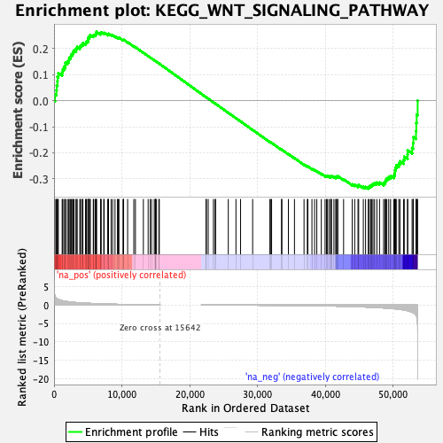
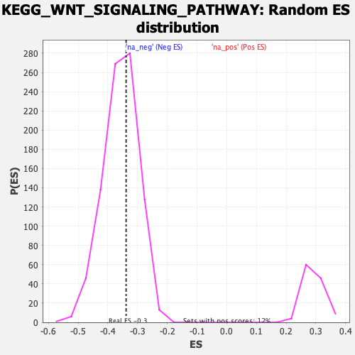

| | | Dataset | prerank |
| Phenotype | NoPhenotypeAvailable |
| Upregulated in class | na_neg |
| GeneSet | KEGG_WNT_SIGNALING_PATHWAY |
| Enrichment Score (ES) | -0.3386348 |
| Normalized Enrichment Score (NES) | -0.9461208 |
| Nominal p-value | 0.6118048 |
| FDR q-value | 1.0 |
| FWER p-Value | 1.0 |
Table: GSEA Results Summary

Fig 1: Enrichment plot: KEGG_WNT_SIGNALING_PATHWAY
Profile of the Running ES Score & Positions of GeneSet Members on the Rank Ordered List
| SYMBOL | RANK IN GENE LIST | RANK METRIC SCORE | RUNNING ES | CORE ENRICHMENT | | 1 | TBL1Y | 138 | 2.425 | 0.0239 | No |
| 2 | APC2 | 348 | 1.844 | 0.0402 | No |
| 3 | WNT10B | 387 | 1.775 | 0.0589 | No |
| 4 | PRKACA | 504 | 1.633 | 0.0745 | No |
| 5 | CHP1 | 518 | 1.618 | 0.0920 | No |
| 6 | PRKCG | 630 | 1.520 | 0.1065 | No |
| 7 | RAC3 | 1197 | 1.182 | 0.1089 | No |
| 8 | WNT10A | 1274 | 1.155 | 0.1201 | No |
| 9 | FOSL1 | 1451 | 1.081 | 0.1286 | No |
| 10 | CTNNBIP1 | 1664 | 1.006 | 0.1356 | No |
| 11 | WNT3 | 1685 | 0.999 | 0.1462 | No |
| 12 | PRKACB | 1972 | 0.923 | 0.1509 | No |
| 13 | PPP2R5E | 2176 | 0.870 | 0.1566 | No |
| 14 | PLCB3 | 2235 | 0.857 | 0.1649 | No |
| 15 | CAMK2A | 2436 | 0.816 | 0.1701 | No |
| 16 | CER1 | 2534 | 0.796 | 0.1770 | No |
| 17 | NFATC1 | 2722 | 0.761 | 0.1818 | No |
| 18 | WNT16 | 2813 | 0.744 | 0.1882 | No |
| 19 | WNT9A | 2956 | 0.721 | 0.1935 | No |
| 20 | PLCB2 | 3246 | 0.674 | 0.1954 | No |
| 21 | VANGL1 | 3275 | 0.670 | 0.2022 | No |
| 22 | TCF7L1 | 3420 | 0.645 | 0.2066 | No |
| 23 | FRAT2 | 3804 | 0.596 | 0.2059 | No |
| 24 | PRICKLE1 | 3880 | 0.588 | 0.2110 | No |
| 25 | PRICKLE2 | 4061 | 0.567 | 0.2138 | No |
| 26 | FRAT1 | 4234 | 0.545 | 0.2165 | No |
| 27 | DVL2 | 4255 | 0.543 | 0.2221 | No |
| 28 | SMAD4 | 4642 | 0.499 | 0.2203 | No |
| 29 | RUVBL1 | 4749 | 0.490 | 0.2237 | No |
| 30 | WNT7B | 4807 | 0.486 | 0.2280 | No |
| 31 | SFRP2 | 5010 | 0.470 | 0.2293 | No |
| 32 | CSNK2B | 5039 | 0.466 | 0.2339 | No |
| 33 | FZD1 | 5047 | 0.464 | 0.2388 | No |
| 34 | CAMK2D | 5073 | 0.462 | 0.2434 | No |
| 35 | SFRP5 | 5236 | 0.447 | 0.2453 | No |
| 36 | DAAM2 | 5314 | 0.440 | 0.2486 | No |
| 37 | PPP2R5B | 5330 | 0.438 | 0.2531 | No |
| 38 | CSNK1E | 5787 | 0.401 | 0.2490 | No |
| 39 | SOX17 | 5834 | 0.396 | 0.2525 | No |
| 40 | NFATC4 | 6051 | 0.382 | 0.2526 | No |
| 41 | FZD7 | 6157 | 0.374 | 0.2547 | No |
| 42 | SFRP1 | 6186 | 0.372 | 0.2583 | No |
| 43 | PRKX | 6238 | 0.368 | 0.2613 | No |
| 44 | MMP7 | 6270 | 0.366 | 0.2648 | No |
| 45 | FZD2 | 6867 | 0.325 | 0.2572 | No |
| 46 | RAC2 | 6888 | 0.323 | 0.2603 | No |
| 47 | CTBP1 | 6952 | 0.319 | 0.2626 | No |
| 48 | DAAM1 | 7334 | 0.296 | 0.2588 | No |
| 49 | PPP2R1B | 7392 | 0.293 | 0.2609 | No |
| 50 | DVL3 | 7917 | 0.263 | 0.2540 | No |
| 51 | PPP2R1A | 8033 | 0.256 | 0.2546 | No |
| 52 | PORCN | 8035 | 0.256 | 0.2574 | No |
| 53 | CCND2 | 8422 | 0.235 | 0.2528 | No |
| 54 | FZD8 | 8648 | 0.225 | 0.2510 | No |
| 55 | CUL1 | 8996 | 0.209 | 0.2468 | No |
| 56 | RAC1 | 9357 | 0.192 | 0.2422 | No |
| 57 | WNT6 | 9472 | 0.187 | 0.2421 | No |
| 58 | WNT8B | 9575 | 0.181 | 0.2422 | No |
| 59 | PPP2CA | 10175 | 0.157 | 0.2327 | No |
| 60 | SMAD2 | 10251 | 0.154 | 0.2330 | No |
| 61 | PRKCB | 10256 | 0.154 | 0.2346 | No |
| 62 | MAPK10 | 10856 | 0.130 | 0.2248 | No |
| 63 | ROCK1 | 11768 | 0.100 | 0.2089 | No |
| 64 | BTRC | 12005 | 0.093 | 0.2055 | No |
| 65 | PSEN1 | 13179 | 0.057 | 0.1842 | No |
| 66 | PPP2CB | 13884 | 0.037 | 0.1714 | No |
| 67 | RBX1 | 14190 | 0.029 | 0.1660 | No |
| 68 | SMAD3 | 14390 | 0.025 | 0.1626 | No |
| 69 | DKK1 | 14784 | 0.016 | 0.1554 | No |
| 70 | FZD5 | 14935 | 0.013 | 0.1528 | No |
| 71 | FZD4 | 14959 | 0.013 | 0.1525 | No |
| 72 | RHOA | 14965 | 0.013 | 0.1525 | No |
| 73 | CACYBP | 15116 | 0.008 | 0.1498 | No |
| 74 | CCND3 | 15472 | 0.003 | 0.1432 | No |
| 75 | CHP2 | 15527 | 0.002 | 0.1422 | No |
| 76 | PPP2R5D | 22421 | -0.009 | 0.0135 | No |
| 77 | JUN | 22475 | -0.010 | 0.0126 | No |
| 78 | PPP3CA | 22744 | -0.015 | 0.0078 | No |
| 79 | DVL1 | 23517 | -0.019 | -0.0065 | No |
| 80 | TP53 | 23769 | -0.023 | -0.0109 | No |
| 81 | PPARD | 23830 | -0.024 | -0.0117 | No |
| 82 | FZD3 | 25707 | -0.033 | -0.0464 | No |
| 83 | MAPK8 | 26837 | -0.041 | -0.0671 | No |
| 84 | CCND1 | 27519 | -0.048 | -0.0793 | No |
| 85 | CAMK2G | 29300 | -0.052 | -0.1120 | No |
| 86 | PRKACG | 31844 | -0.068 | -0.1588 | No |
| 87 | WNT8A | 31996 | -0.069 | -0.1608 | No |
| 88 | PPP2R5C | 32097 | -0.071 | -0.1619 | No |
| 89 | PPP3R2 | 33561 | -0.089 | -0.1883 | No |
| 90 | MYC | 33614 | -0.090 | -0.1883 | No |
| 91 | CHD8 | 34576 | -0.102 | -0.2051 | No |
| 92 | PPP3R1 | 35472 | -0.117 | -0.2206 | No |
| 93 | LRP6 | 36882 | -0.148 | -0.2453 | No |
| 94 | CSNK1A1 | 37371 | -0.160 | -0.2527 | No |
| 95 | CAMK2B | 37452 | -0.163 | -0.2524 | No |
| 96 | CXXC4 | 38048 | -0.179 | -0.2615 | No |
| 97 | FZD6 | 38444 | -0.190 | -0.2669 | No |
| 98 | MAP3K7 | 38767 | -0.198 | -0.2707 | No |
| 99 | WNT5A | 39431 | -0.219 | -0.2807 | No |
| 100 | WNT2 | 39984 | -0.238 | -0.2884 | No |
| 101 | SKP1 | 40190 | -0.246 | -0.2896 | No |
| 102 | FZD10 | 40309 | -0.251 | -0.2890 | No |
| 103 | TCF7L2 | 40555 | -0.259 | -0.2908 | No |
| 104 | WNT4 | 40804 | -0.269 | -0.2925 | No |
| 105 | CTBP2 | 40837 | -0.270 | -0.2901 | No |
| 106 | PPP3CC | 40935 | -0.275 | -0.2889 | No |
| 107 | PPP3CB | 41294 | -0.289 | -0.2925 | No |
| 108 | PPP2R5A | 41561 | -0.299 | -0.2942 | No |
| 109 | WNT1 | 41655 | -0.302 | -0.2926 | No |
| 110 | EP300 | 41819 | -0.309 | -0.2923 | No |
| 111 | WNT7A | 41859 | -0.311 | -0.2896 | No |
| 112 | SENP2 | 42718 | -0.348 | -0.3018 | No |
| 113 | PLCB1 | 43995 | -0.415 | -0.3211 | No |
| 114 | TBL1XR1 | 44358 | -0.435 | -0.3231 | No |
| 115 | NLK | 44845 | -0.465 | -0.3271 | No |
| 116 | PLCB4 | 44941 | -0.470 | -0.3238 | No |
| 117 | MAPK9 | 45630 | -0.515 | -0.3310 | No |
| 118 | DKK2 | 45964 | -0.541 | -0.3313 | No |
| 119 | FZD9 | 46356 | -0.573 | -0.3324 | Yes |
| 120 | WNT5B | 46505 | -0.586 | -0.3287 | Yes |
| 121 | WNT3A | 46722 | -0.605 | -0.3262 | Yes |
| 122 | APC | 46885 | -0.619 | -0.3224 | Yes |
| 123 | GSK3B | 47054 | -0.633 | -0.3186 | Yes |
| 124 | CSNK2A1 | 47287 | -0.654 | -0.3158 | Yes |
| 125 | VANGL2 | 47628 | -0.688 | -0.3147 | Yes |
| 126 | WNT9B | 48019 | -0.726 | -0.3140 | Yes |
| 127 | LEF1 | 48621 | -0.795 | -0.3166 | Yes |
| 128 | WNT2B | 48827 | -0.818 | -0.3115 | Yes |
| 129 | TBL1X | 48926 | -0.829 | -0.3042 | Yes |
| 130 | CSNK2A2 | 49095 | -0.848 | -0.2981 | Yes |
| 131 | ROCK2 | 49377 | -0.886 | -0.2937 | Yes |
| 132 | SFRP4 | 49648 | -0.921 | -0.2886 | Yes |
| 133 | AXIN1 | 50134 | -0.996 | -0.2868 | Yes |
| 134 | PRKCA | 50265 | -1.020 | -0.2781 | Yes |
| 135 | CSNK1A1L | 50293 | -1.026 | -0.2674 | Yes |
| 136 | CREBBP | 50383 | -1.046 | -0.2576 | Yes |
| 137 | SIAH1 | 50493 | -1.070 | -0.2480 | Yes |
| 138 | LRP5 | 50863 | -1.141 | -0.2424 | Yes |
| 139 | AXIN2 | 51033 | -1.182 | -0.2326 | Yes |
| 140 | WNT11 | 51564 | -1.324 | -0.2281 | Yes |
| 141 | NFATC2 | 51669 | -1.360 | -0.2151 | Yes |
| 142 | TCF7 | 52154 | -1.538 | -0.2074 | Yes |
| 143 | FBXW11 | 52170 | -1.546 | -0.1908 | Yes |
| 144 | NFAT5 | 52825 | -1.931 | -0.1819 | Yes |
| 145 | CTNNB1 | 52971 | -2.062 | -0.1621 | Yes |
| 146 | DKK4 | 53015 | -2.106 | -0.1398 | Yes |
| 147 | NKD2 | 53404 | -2.767 | -0.1169 | Yes |
| 148 | NFATC3 | 53440 | -2.870 | -0.0862 | Yes |
| 149 | NKD1 | 53499 | -3.074 | -0.0536 | Yes |
| 150 | WIF1 | 53643 | -5.175 | 0.0002 | Yes |
Table: GSEA details [plain text format]

Fig 2: KEGG_WNT_SIGNALING_PATHWAY: Random ES distribution
Gene set null distribution of ES for KEGG_WNT_SIGNALING_PATHWAY